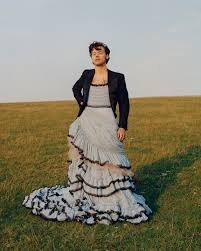

In Janurary of 2016, the infamous band One Direction decided to go on a permanent hiatus for the better good. Soon enought Harry released his first solo song / first single "Sign of the Times" (released in 2017.) In the United States alone, Sign of the Times has debuted number four on the Billboard Hot 100. Within its first week of being released, it sold 142,000 copies by store, even more digitaly, and earned 16.5 million streams and 23 million airplays all within the first week. Harry admitted in an interview that the reason he released Sign of the Times rather the other songs on his album that were also written and ready to be released is because he wanted to divert from the classical One Direction type music.

Since then Harry has released two studio albums, "Harry Styles" (May 12, 2017) and "Fine Line" (December 13, 2019). Harry has admitted to trying new experiences throughout his solo career that he was too afraid and saw as a too badly of a risk during his time in One Direction. Since the break up of the band, Harry has tried more careers that don't just rap around his singing career. Harry has tried and suceeded in both acting and modeling. Harry has acted in "Dunkirk" and has 3 movies yet to be released. "My Policeman""Don't Worry Darling" and a new Marvel movie where he acts as Thanos's brother. Harry has also modeled for Gucci many times before and many also call him "The Face of Gucci".
Harry now has over 41 million monthly Spotify listeners and is currently the 20th most popular and listened to artist in the world. Harry has broken many world records and is "only getting bigger". Harry has gone on two tours so far topping a one night only performance for the launch of his new album "Fine Line". His first tour containg songs from "Harry Styles" was called "Live On Tour", his second tour, containing songs from his second album "Fine Line" was called "Love On Tour". Harry has only done half of Love on Tour cuurently, and will be countinuing it in april as well as preforming at Cochella 2022. Harry has also opened a new brand called "Pleasing" which conatines everything from nail polish, skin care, merch, and is all enviormentally safe.